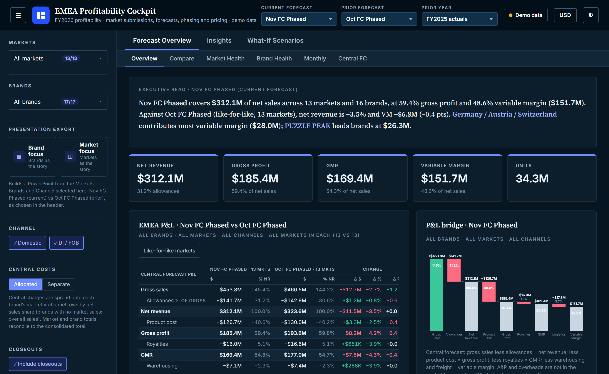

I built the AI Profitability Dashboard to answer a question every commercial finance leader knows: where is margin moving, and why? It runs in a browser, as a Claude artifact or a single web page, and its demo uses synthetic data for a fictional toy company across 13 markets, 16 brands and 161 SKUs.
The tool itself is only part of the story. Building it taught me a lot about how finance and AI should work together. These are the five lessons I would pass on.
1. Define the finance logic first
AI can write a dashboard quickly, but it cannot decide how your business defines variable margin. I specified the P&L structure, the like-for-like rules and the bridge method first. The variable margin bridge splits a change into volume, price and mix, allowances, product cost, royalties and logistics, and the steps must add up exactly. That rule is what makes the output credible in a review meeting.
2. Limit what the AI can use
The Insights Engine answers plain-English questions, but it works only from a pack of tables that the dashboard prepares for each question. Its instructions tell it not to invent figures, causes or outside facts, and to say so when the data cannot answer a question. A narrow scope is what makes an AI assistant usable in finance.
3. Always show the working
Every answer carries a "Data used" section with the tables behind it. A finance reader should never have to take a number on trust. If you would ask an analyst for the source, ask the same of the tool.
4. Keep Excel in the process
Finance people audit in Excel, so the What-If builder exports a formula-driven workbook. Every figure below the inputs is a live formula, inputs are marked, and check rows should read zero. People can then rebuild the logic, challenge it and take ownership of it.
5. Prototype on synthetic data
All the data in the demo is generated by a seeded model, so no real company figure is involved. That let me test freely and share the result openly. Before any real data goes near an AI tool, the access and confidentiality questions need clear answers.
What the dashboard does
The dashboard is organised around the questions a commercial finance team is asked every month. Each view answers one of them, and every view responds to the same filters for market, brand, channel and forecast version.
| View | The question it answers |
|---|---|
| Overview | Where does the current forecast land, and how does it compare with the prior forecast and last year? |
| Compare | What drove the change in variable margin, step by step, from volume to logistics? |
| Market and brand health | Which markets and brands are growing, and which are losing margin? |
| Monthly | How is the year phased, and where are the gaps against the plan? |
| Central forecast | How are central costs spread across markets and brands? |
| Insights | What does the data say about a question asked in plain English? |
| What-if scenarios | What happens to the P&L if price, volume, allowances or costs change? |

How the build worked
The order of work mattered more than any single prompt. This is the sequence I followed, and the one I would recommend to anyone building a finance tool with AI.
Write the finance specification
One document with the P&L lines, their definitions, the bridge rules and the like-for-like logic. This is the part only finance can write.
Generate synthetic data
A seeded model creates markets, brands and SKUs with realistic seasonality, so every test run produces the same numbers.
Build one view at a time
Each view is checked against the specification before the next one starts. Small steps make errors easy to find.
Add reconciliation checks
Totals must tie across views, and every bridge must add up to the change it explains. A failed check is a bug, not a rounding issue.
Export to familiar formats
Results leave the tool as an Excel workbook with live formulas, or as a PowerPoint for a review meeting.
What I would do differently
I would write the reconciliation checks even earlier, before the first view, because they caught more problems than any review by eye. I would also keep a simple change log of the instructions given to the AI from the start. When a result changes, you want to know whether the data changed, the logic changed or the instructions changed. That is the same discipline I describe in AI in finance needs controls too.
How to start your own
- Pick one recurring question that takes too long to answer today.
- Write the finance logic on one page before you open any AI tool.
- Use synthetic or approved data only, and be clear about which is which.
- Check every total against the source system before anyone relies on it.
- Put the result in front of one real user early, and let their questions shape the next version.
The biggest change for me was speed. Once the logic was clear, I could go from a finance idea to something people can click through far faster than a traditional build. The finance thinking stayed the slow and valuable part, and I think that is the right way round.
Try the dashboard demo. Written Insights Engine answers need Claude, so on this site it shows the data tables behind each question.
Newer: Forecast accuracy is a finance job: insight, gatekeeping and better inputsOlder: Setting prices: markup, market, competitive and target pricing, and what they do to the P&L